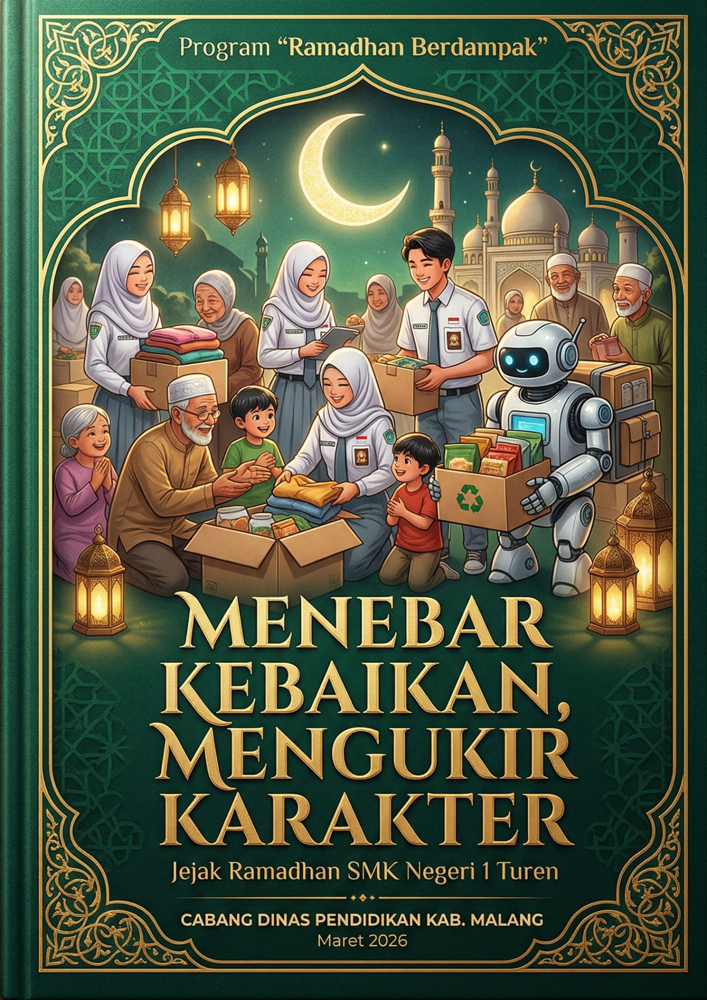
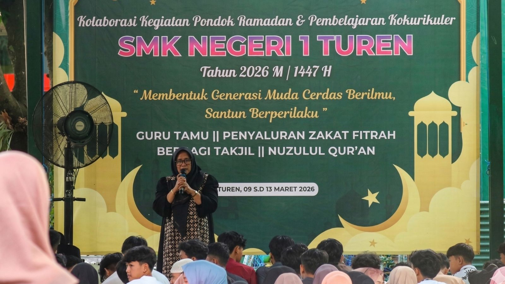
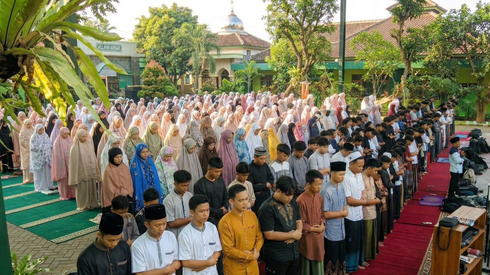
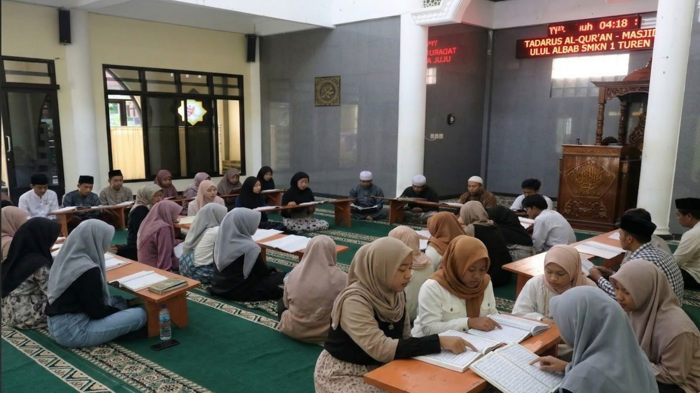
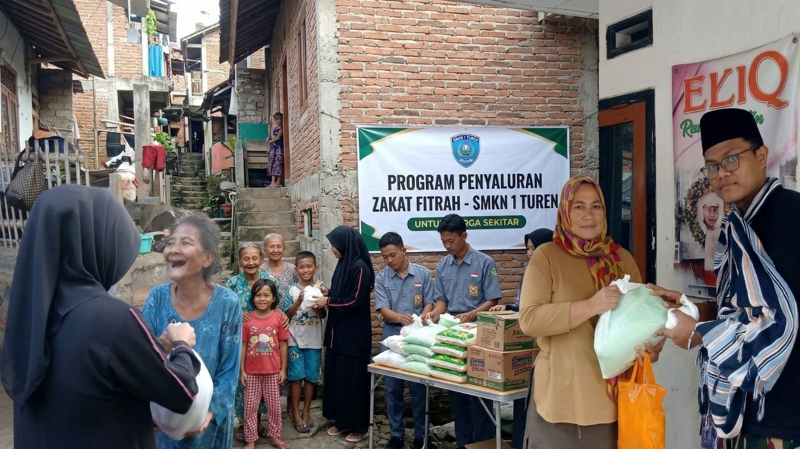
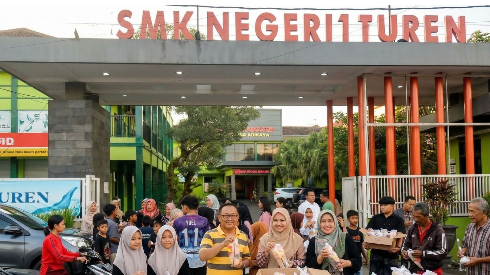
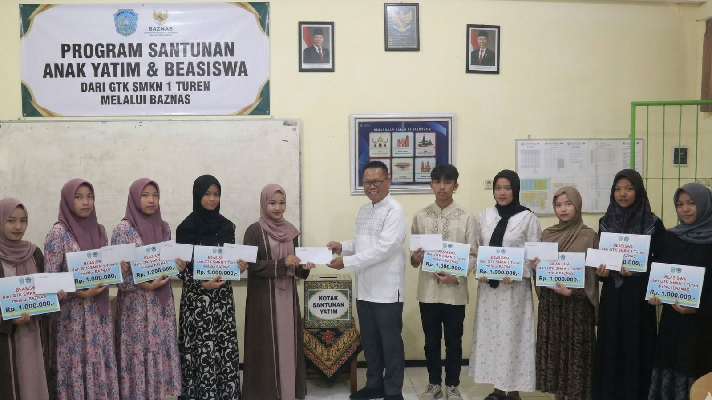
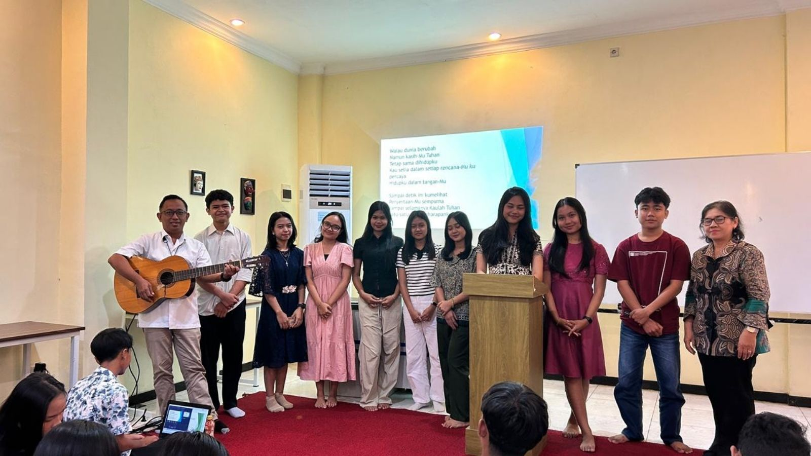
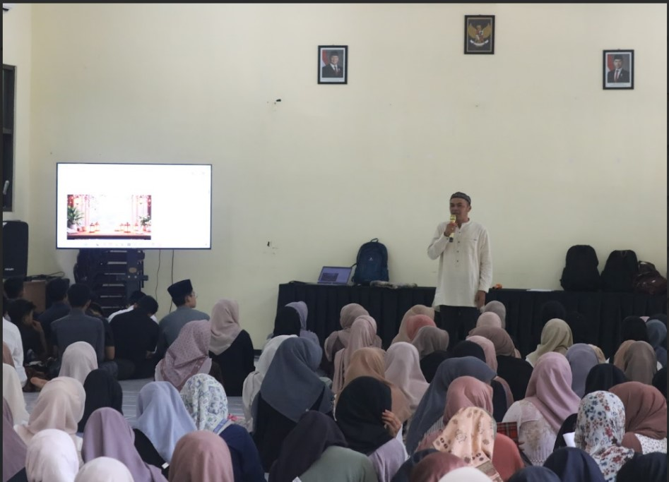

Di Buku Digital SMKN 1 Turen
👆
Klik atau Tarik sudut kanan bawah gambar untuk membuka buku.
🔊
Nyalakan volume perangkat Anda untuk mendengarkan narasi di setiap halaman.
🎵
Klik tombol Putar Musik di pojok kanan atas untuk mengaktifkan musik latar.

Buku digital ini disusun sebagai bentuk partisipasi aktif keluarga besar SMK Negeri 1 Turen dalam menyukseskan program "Ramadhan Berdampak". Kami menyadari bahwa bulan suci Ramadhan adalah momentum emas untuk memperkuat nilai spiritual sekaligus membangun kepedulian sosial yang nyata.
Melalui literasi digital ini, kami berupaya mendokumentasikan berbagai praktik baik, mulai dari aktivitas ibadah hingga aksi sosial yang menebar manfaat dan memunculkan karakter positif bagi seluruh siswa.
IRamadhan 1447 H di SMKN 1 Turen bukan sekadar rutinitas ibadah, melainkan ruang pembelajaran untuk menumbuhkan iman dan kepedulian. Aktivitas religius diwujudkan secara masif melalui Pondok Ramadhan yang berfokus pada penguatan spiritualitas bagi siswa muslim, berlangsung pada 9 – 13 Maret 2026.

Sholat berjamaah memiliki urgensi fundamental sebagai instrumen penguatan karakter. Secara pedagogis, aktivitas ini melatih kepatuhan hierarkis dan kohesi sosial yang tinggi, di mana perbedaan latar belakang disatukan dalam barisan saf yang setara. Ini adalah laboratorium kontekstual kedisiplinan.

Rutinitas Tadarus harian dan peringatan Nuzulul Qur'an menjadi momentum krusial untuk memperkuat karakter spiritual peserta didik. Interaksi dengan Al-Qur'an tidak sekadar berhenti pada tilawah ritual, tetapi bertransformasi menjadi pedoman etika dan moral keseharian untuk mencetak generasi dengan kecerdasan spiritual yang tangguh.

Penyaluran Zakat Fitrah merupakan instrumen strategis mengejawantahkan keadilan sosial. Dirancang sebagai laboratorium karakter, siswa menginternalisasi empati terhadap realitas ekonomi masyarakat. Tata kelola yang transparan memastikan setiap zakat memberikan dampak nyata meringankan beban sesama.

Kepedulian diwujudkan melalui aksi turun langsung ke jalan. Para siswa dengan antusias membagikan paket berbuka puasa kepada masyarakat sekitar Turen. Momen ini bukan hanya sekadar mendistribusikan makanan, melainkan sarana efektif untuk mengikis ego, melatih empati, dan menyebarkan kebahagiaan.

Mengukir senyum di wajah anak-anak yatim adalah puncak dari kelembutan hati. Kegiatan santunan ini dirancang bukan sekadar untuk memberi bantuan materi, melainkan sebagai wujud nyata dari pendidikan empati, kepedulian terhadap sesama, dan mempererat tali persaudaraan di bulan yang mulia.

Menjadi kebanggaan dan pembeda di SMKN 1 Turen, kami menghadirkan Pondok Kasih untuk memfasilitasi siswa non-muslim. Kegiatan ini menjadi ruang pembentukan karakter moral yang mengedepankan toleransi, memastikan setiap siswa dapat bertumbuh secara spiritual dan bersama-sama memberi dampak positif.

Sebagai muara dari seluruh kegiatan, siswa diajak untuk duduk sejenak melakukan renungan dan refleksi diri (muhasabah). Momen emosional ini bertujuan untuk mengendapkan nilai-nilai kebaikan agar benar-benar meresap, mengubah pola pikir, dan mematangkan kedewasaan spiritual mereka.

Untuk melengkapi rekam jejak digital ini, saksikan sekilas potret semangat dan sinergi dari siswa-siswi SMK Negeri 1 Turen selama pelaksanaan program Pondok Ramadhan. Mari saksikan kolaborasi kami secara langsung.
Karya ini masih jauh dari sempurna. Berikan umpan balik Anda untuk mendukung inovasi siswa vokasi.
Tim Penyusun SMK Negeri 1 Turen
Maret 2026
@2026 Davis Rifandi